a_bolt
4 帧 · 单格 14×8 · top-bottom
1× 导入图 · 8× 帧表17组 / 77帧。动图以120ms/帧循环，仅供查看；游戏实际帧时长由导入器决定。所有导入PNG为单行帧表。
4 帧 · 单格 14×8 · top-bottom
1× 导入图 · 8× 帧表3 帧 · 单格 12×12 · left-right
1× 导入图 · 8× 帧表5 帧 · 单格 24×12 · left-right
1× 导入图 · 8× 帧表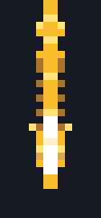
4 帧 · 单格 14×30 · left-right
1× 导入图 · 8× 帧表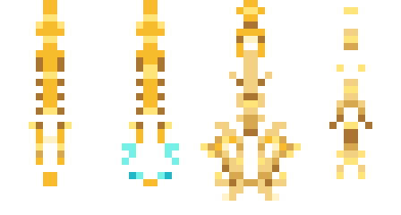
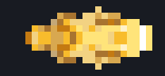
4 帧 · 单格 26×12 · top-bottom
1× 导入图 · 8× 帧表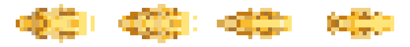
5 帧 · 单格 36×14 · left-right
1× 导入图 · 8× 帧表4 帧 · 单格 16×18 · left-right
1× 导入图 · 8× 帧表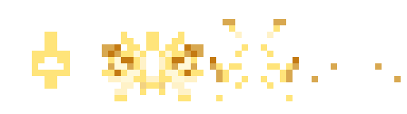
4 帧 · 单格 16×8 · left-right
1× 导入图 · 8× 帧表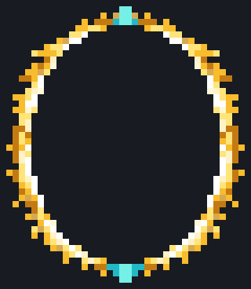
4 帧 · 单格 40×46 · left-right
1× 导入图 · 8× 帧表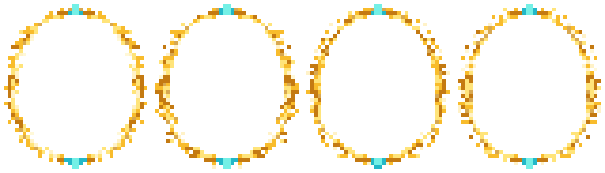
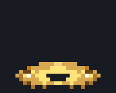
5 帧 · 单格 30×24 · left-right
1× 导入图 · 8× 帧表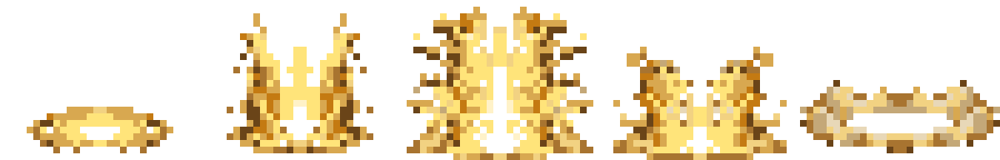
4 帧 · 单格 16×20 · left-right
1× 导入图 · 8× 帧表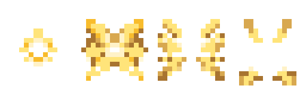
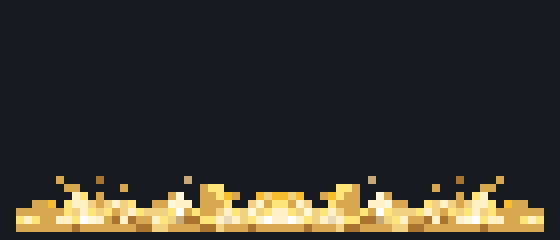
6 帧 · 单格 70×30 · left-right
1× 导入图 · 8× 帧表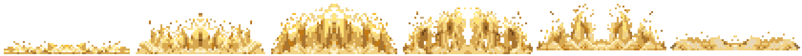
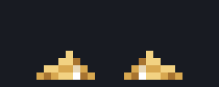
4 帧 · 单格 30×12 · left-right
1× 导入图 · 8× 帧表4 帧 · 单格 18×22 · left-right
1× 导入图 · 8× 帧表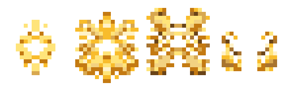
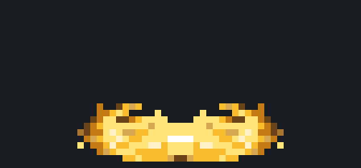
6 帧 · 单格 56×26 · left-right
1× 导入图 · 8× 帧表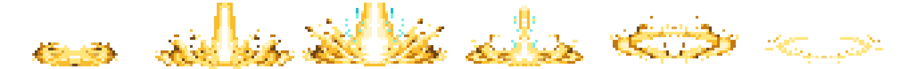
5 帧 · 单格 16×60 · left-right
1× 导入图 · 8× 帧表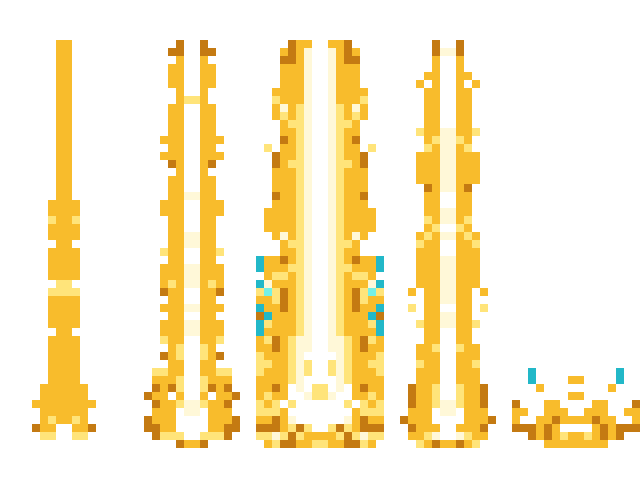
6 帧 · 单格 40×14 · left-right
1× 导入图 · 8× 帧表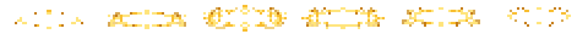